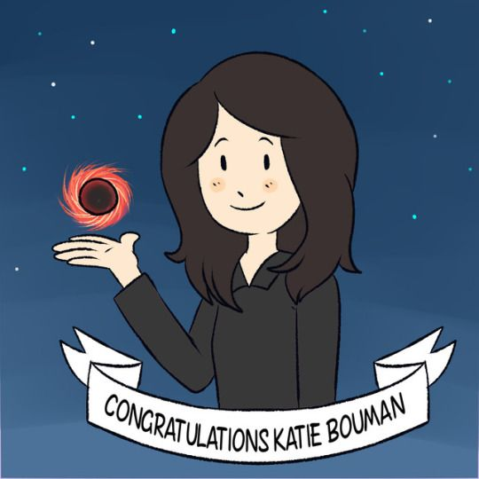
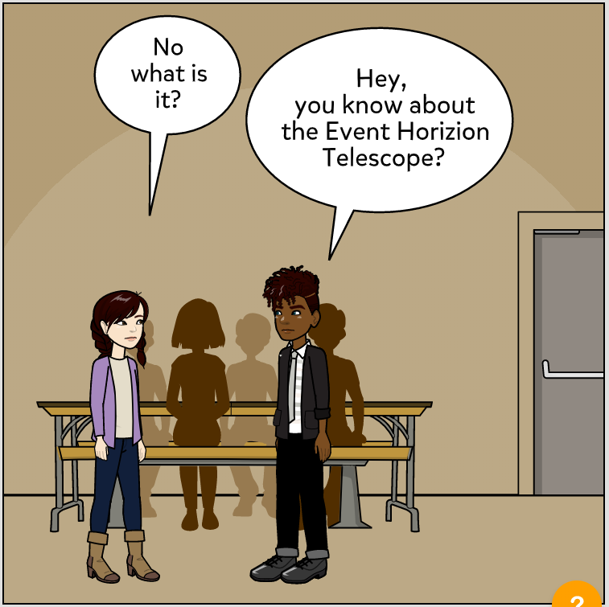
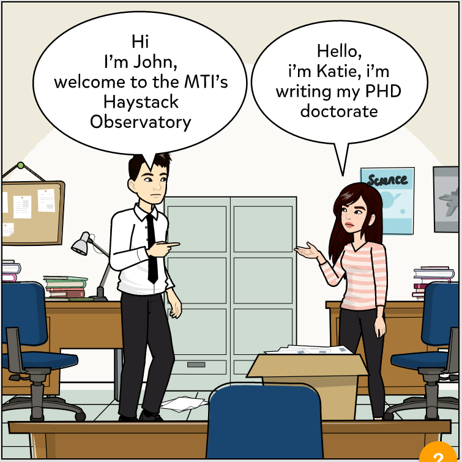

About Her

Katie Bouman, nata a West Lafayette il 9 Maggio 1989 è un’informatica statunitense, oggi è una professoressa associata al California Institute
of Technology, specializzata nelle tecniche di trattamento delle immagini. La sua ricerca si concentra sull'Imaging Computazionale, ovvero di gestione di sistemi che integrano algoritmi e progettazione di sensori ad hoc, rendendo possibile osservare fenomeni
precedentemente difficili o impossibili da misurare con approcci tradizionali. La sua figura è per noi di isperazione, non solo perchè è riuscita insieme al suo team ad ottenere la prima foto di un buco nero; ma anche perchè
è un'ottima leader ed è stata tenace nel seguire le proprie passioni, che l'hanno portata a realizzare qualcosa di mai fatto prima.
Qui è possibile trovare la nostra
presentazione in powerpoint, complementare a questo sito.
Her Life

Katie è cresciuta in Indiana dove frequentò il West Lafayette Junior-Senior High School,
qui nell'anno del suo diploma venne a sapere dell' Event Horizon Telescope, nel 2007.
L' EHT non è nient'altro che un array formato da una rete globale di radio telescopi, che provenienti
da diverse stazioni orbitanti attorno alla terra avevano un angolo di visione sufficiente ad osservare oggetti di dimensioni di
buchi neri supermassivi. Probabilmente oltre alla figura del padre, ingenere eletteronico e biomedico, questa scoperta contribuì
a far crescere in lei la passione per l'astronomia di pari passo con quella per l'informatica.
Dopo il diploma Katie studiò ingegneria elettronica all'Università del Michigan, e si laureò con lode nel 2011;
consegui poi la specializzazione e il suo dottorato in ingneria elettronica e computer science dal Massachusetts Institute of Technology.
Al MIT fù un membro dell'osservatorio Haystack; La sua tesi di specializzazione "Estimating Material Properties of Fabric through the Observation of Motion,
fù ricompensata con il premio Ernst Guillem per la migliore tesi di specializzazione in Ingegneria Elettronica.
Prima di conseguire il suo dottorato Katie ha partecipato a TEDx talk, con un intervento intitolato "How to Take a Picture of a Black hole", in cui spiegava
algoritmi che sarebbero potut essere usati per catturare le prime le prime immagini di un buco nero.

Her Work

Dopo il Dottorato, Katie si uni all'Università di Harward come "postdoctoral fellow" al Team che lavorava all'elaborazione delle immagini
dell' EHT nel 2013. Si occupò di dirigere lo sviluppo di un algoritmo per l'imaging di buchi neri, conosciuto come "Continuous High-resolution Image Reconstruction
using Patch priors" (CHIRP). Chirp ispirò la metodologia di image validation usata per poi acquisire la prima immagine di un buco nero nel 2019, dove Bouman
ebbe un ruolo fondamentale, poichè si occupò di verificare le immagini e selezionare parametri per filtrare le stesse, oltre a partecipare nello sviluppo di un robusto image framework
che comparasse i risultati di diverse tecniche di ricostruzione di immagine.
Katie ricevette l'attenzione dei media dopo che una foto, nella quale era evidenziata la sua reazione nel momento in cui era stato effettutato il riconoscimento dell'ombra del buco nero nelle immagini EHT, divenne virale.
I media inzialmente fraintesero la situazione, pubblicizzando Katie come un "genio solitario", ma lei stessa più volte ha ribadito che i risultati provenivano dal lavoro di un ampia collaborazione,
mostrando l'importanza del teamwork.
Ad oggi, Katie Bouman insegna al California Institute of Technology, dove programma di lavorare su nuovi sistemi per l'elaborazione dell'immagine, utilizzando la "computer vision" e il "machine learning".